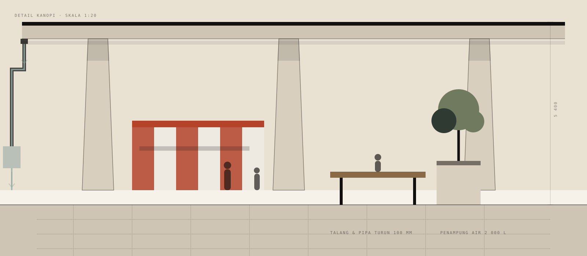

Karya / 03Ruang publik · Semarang · 2025
Pasar
Lama
Pasar yang dibuka sebelum matahari terbit — dan tetap hidup setelah pedagang pulang.
- Lokasi
- Semarang, Jawa Tengah
- Luas
- 2.100 m²
318 lapak - Tahun
- 2025
- Peran
- Arsitektur, lanskap, keterlibatan warga
- Tim
- Aria Wibowo, Bima Nugraha, Sekar Prameswari
- Status
- Selesai, beroperasi

Pasar ini berdiri pada 1962 dan terbakar sebagian pada 2019. Ketika kami masuk, 318 pedagang berjualan di tenda darurat di seberang jalan. Syarat pertama dari mereka sederhana: jangan pindahkan kami terlalu lama. Syarat itu menentukan seluruh metode kerja.
Kami membagi lahan menjadi tiga zona dan membangunnya bergantian. Setiap kali satu zona selesai, pedagang pindah ke sana, lalu zona berikutnya dibongkar. Tidak ada satu pun hari di mana pasar berhenti berjualan. Rata-rata pedagang hanya berpindah dua kali dalam dua tahun.
Strukturnya beton pracetak dengan kanopi setinggi 9 meter. Bentangnya cukup lebar sehingga tidak ada kolom di area jual, dan panas bisa keluar lewat celah di puncak. Air hujan dari atap ditampung di enam tangki bawah tanah; sebagian dipakai untuk mencuci dan menyiram tanaman di halaman.
“Ruang publik yang baik harus bisa dipakai tanpa membeli apa pun.”
Di luar jam pasar, halaman dan bangku tetap terbuka. Sore hari, anak-anak bermain di sana; malamnya, beberapa pedagang makanan memakai kanopi selatan. Kami tidak merancang program itu. Kami hanya memastikan tidak ada pagar yang menghalanginya.

Proyek berikutnya
Galeri Candi
Budaya · Yogyakarta · 2022